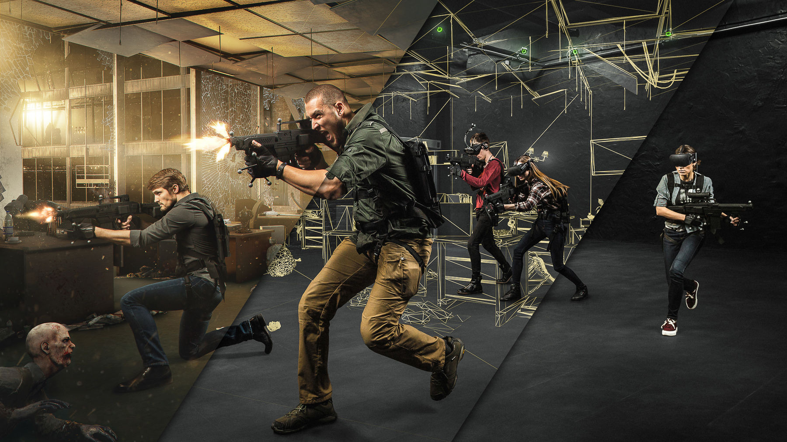
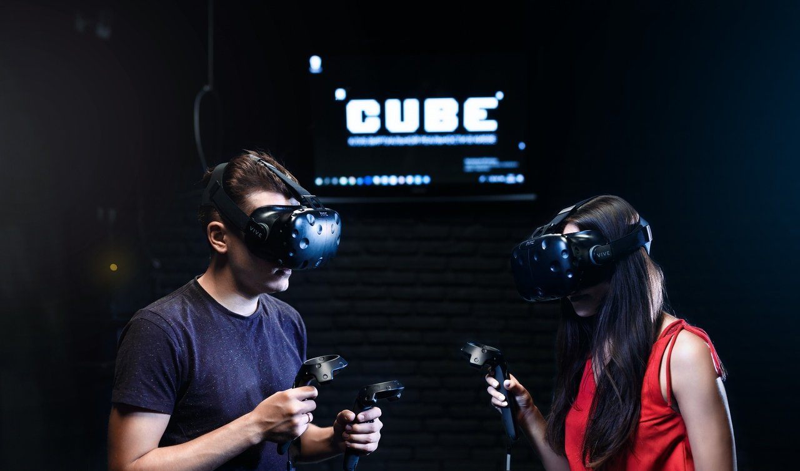

 
Где поиграть в игры виртуальной реальности в Санкт-Петербурге? За магическим сочетанием букв VR скрывается целый мир, который готов принять в свои объятия любого ценителя актуальных высокотехнологичных развлечений. KudaGo расскажет о самых интересных местах, где поиграть в игры виртуальной реальности в Санкт-Петербурге. Виртуальная реальность окружает нас со всех сторон. Она не только поставляет новости, учит, ориентирует на местности и помогает покупать всё, что только можно вообразить и захотеть. Компьютерные пространства, созданные современными техническими визионерами, служат пространством для игр и развлечений. Это новое слово в индустрии, шаг вперёд для целого поколения, которое может не просто представлять себе иные миры, но очутиться в них с полным погружением. Виртуальные игры – новый способ постижения законов вселенной, порталы в неизведанное, которые открыты для всех. И если вы ставите перед собой вопрос, где поиграть в VR в Санкт-Петербурге, рекомендации портала KudaGo послужат отличным началом для знакомства с предметом или его углублённого изучения. В городе на Неве вы найдёте множество клубов, где поиграть в игры виртуальной реальности можно в любой день. Вам предложат самое новое оборудование, чтобы впечатлением было полным. Кроме того, представлены игры в ассортименте от самых простых и доступных до сложных квестов на других планетах, с которыми справится не каждый профи. Кстати, игры виртуальной реальности рассчитаны на представителей разных возрастов. Вы можете прийти с друзьями, коллегами по работе – и даже с детьми. Для маленьких исследователей компьютерных пространств предусмотрены не только игровые программы, но и познавательные, развивающие приложения. Вселенная под названием VR находится в постоянном развитии! Поэтому не забывайте время от времени освежать чувства, заходя в любимый клуб за новинками.